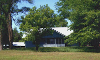
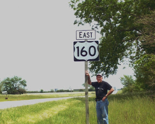

Hwy 160
7/3/2010
Yesterday I heard a radio report that it is anticipated there will be an increase of American's on the road this holiday weekend. I won't be one of them. Colorado is my favorite place to be during Summer months! However, I find myself sitting
When I was in the 8th grade my parents purchased a farm located along US Hwy 160, one mile east of Harper, Kansas. I was always fascinated by the vehicles that traveled both east and west as they passed our home. Many were easily recognized as the cars and trucks of neighbors. But there was the occasional out of state license that made me speculate as to who the occupants were, where they came from and where were they going. In my youthful mind, that familiar highway we traveled short distances almost daily to school church, relatives, friends, neighbors, and nearby towns, was also a road that must certainly lead to endless unknown and only imagined adventures!
One of my goals for retired years was to drive US Hwy 160 from end to end. Some 2,000 plus miles. The highway is superbly maintained to this day, and the miles are numbered, beginning just outside of Tuba City, Arizona and traveling East through Colorado, Kansas, and ending at Poplar Bluff, Missouri. while driven in segments, I have now completed that goal. What an amazing variety of sights and delightful people! I was right - there are endless adventures awaiting the person who travels those miles. I suppose that is true of any and all roads and highways. But in the case of Us 160, I had to see for myself. Now the memories of my youth, forever connected by the miles of pavement, have been stretched from horizon to horizon. And while Adelia is less than thrilled at the thought, I'd love to do it again!
{kind=link}

in the shade of our backyard deck thinking travel. ...When I was in the 8th grade my parents purchased a farm located along US Hwy 160, one mile east of Harper, Kansas. I was always fascinated by the vehicles that traveled both east and west as they passed our home. Many were easily recognized as the cars and trucks of neighbors. But there was the occasional out of state license that made me speculate as to who the occupants were, where they came from and where were they going. In my youthful mind, that familiar highway we traveled short distances almost daily to school church, relatives, friends, neighbors, and nearby towns, was also a road that must certainly lead to endless unknown and only imagined adventures!
{kind=link}

One of my goals for retired years was to drive US Hwy 160 from end to end. Some 2,000 plus miles. The highway is superbly maintained to this day, and the miles are numbered, beginning just outside of Tuba City, Arizona and traveling East through Colorado, Kansas, and ending at Poplar Bluff, Missouri. while driven in segments, I have now completed that goal. What an amazing variety of sights and delightful people! I was right - there are endless adventures awaiting the person who travels those miles. I suppose that is true of any and all roads and highways. But in the case of Us 160, I had to see for myself. Now the memories of my youth, forever connected by the miles of pavement, have been stretched from horizon to horizon. And while Adelia is less than thrilled at the thought, I'd love to do it again!